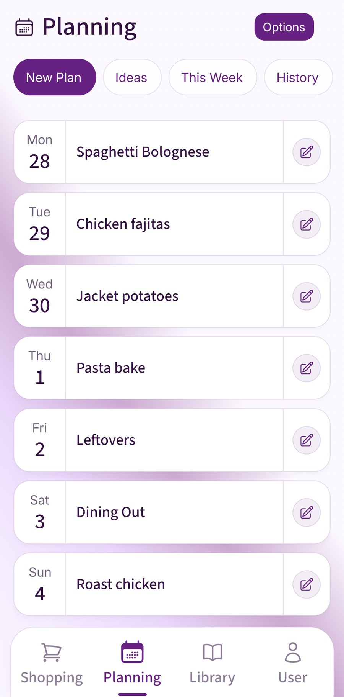

You're buying ingredients for curry, somebody has added washing-up liquid, and a message arrives asking for the oat milk in the blue carton. A useful shopping list app keeps those details where the shopper can find them. For families, couples and housemates, the best choice depends on how much of the week you want the app to organise.
You might need a shared checklist, better categories, or a list that starts with the meals you've planned. Here are seven options worth considering for those different jobs.
This guide is published by Fameally, developed by ENVentures LTD. Competitor details come from official product pages and support information checked on 16 October 2026. These are recommendations by household need, rather than a hands-on ranking of every app.
Shopping list apps at a glance
Start with the job you keep repeating. If you're copying ingredients from dinners into a list every week, connected meal planning may help. If the list is already easy to write, sharing and clear product details may matter more. Check the phones and accounts everyone will use before choosing.
| App | Consider it for | Sharing and devices | Access to check |
|---|---|---|---|
| Fameally | Meals, reusable weeks and household essentials | Family workspace; iPhone, iPad and Android | Paid plans; eligible introductory Family access |
| AnyList | Shared lists and recipe organisation | iOS and Android; web access with Complete | Free list sharing; paid planning extras |
| OurGroceries | A shared household list with item details | iPhone, Android and web; shared household account | Free with ads; paid ad removal |
| Bring! | Visual lists and recipe ingredients | Shared lists on iOS and Android | Core list and sharing features are free |
| Listonic | Organised lists and entered-price totals | Shared lists on iOS, Android and web | Free core features; premium extras |
| Apple Reminders | Grocery categories in an existing Apple setup | Compatible Apple/iCloud setup for sharing | Included on supported Apple devices |
| Google Keep | A familiar checklist with your other notes | Shared notes on mobile and web; Google accounts | Free personal app |
Fameally: meals, plans and the household shop
Fameally is a useful fit when the shopping list is the end of several jobs: choosing dinners, checking ingredients and remembering everything else the house needs. Save meals with their ingredients, put them into your week and generate the food list. Matching ingredients and units can be combined before you check the cupboards.

Food, cleaning, toiletries and general items have their own shopping sections. That gives the rice for curry, washing tablets and toothpaste somewhere to go without expecting a recipe to remember them. You can keep lists separate or combine them for the trip.
Core covers saved meals and ingredient-based lists. Individual adds saved weekly plans, one-tap weekly essentials and aisle sorting. A week that worked becomes a starting point you can adjust, instead of another list to rebuild from memory.

Family includes those features and a shared workspace for meals, plans and lists. The owner can invite up to five people by email. It's worth trying when one person chooses dinners and somebody else shops, because both jobs can stay connected.
As purchases build up, Due Soon suggestions can prompt checks for regular items. They need at least three recorded purchases in separate shopping cycles, with reasonably consistent gaps. They don't measure what's in the cupboard; you choose what to add.
Eligible new users get 60 days of free Family access, without payment details or an automatic charge when it ends. See current plans and UK pricing. Choose Fameally when you want useful meals and shopping history to make the next week easier.
For a practical example of arranging the items before you shop, read our guide to organising a shopping list by supermarket aisle.
AnyList: shared lists with recipe tools
AnyList is worth considering when you want an organised shared list with room to collect recipes. Its free iOS and Android app includes creating and sharing lists, with common items grouped into categories. You can keep recipes and add their ingredients to the shop too.
AnyList Complete adds the meal-planning calendar, web access and further recipe features. Check its free and paid feature comparison against the things your household needs. Try it if you want to begin with shared lists and decide later how much recipe and calendar organisation to add.
Already using AnyList and considering a change? Our AnyList alternatives for family meal planning and shopping lists guide compares the routines to try before moving your recipes and lists.
OurGroceries: a straightforward household list
OurGroceries puts the shared list first. Household members can update it from iPhone, Android or a web browser. Categories, photos, notes and quantities help explain which item to buy, and saved recipe ingredients can be added to a list.
It's free with advertising; a paid upgrade removes ads. Its setup guidance explains that household devices use the same OurGroceries account to see the same lists. That's worth getting right before the first trip. Consider it when agreeing what needs buying is the main job, especially if specific brands or pack details often get lost in messages.
Bring!: a visual list to share
Bring! uses a visual shopping list, with shared updates across iOS and Android. Its core list and sharing functions are free. It also offers recipe inspiration, saved recipes and a way to add recipe ingredients to the list.
Try it if a visual layout feels easier for your household to scan than a plain checklist. Add a few similar products and check whether everyone can tell them apart. Bring! also promotes retailer offers, but check which retailers and regions those cover before counting on them for a UK shop. The shared-list workflow is the useful starting point for this comparison.
Listonic: sorting and an estimated total
Listonic combines shared lists with automatic sorting, suggestions based on shopping history and a total-cost calculator using prices you enter. It supports iOS, Android and web access, which makes it an option for households using different phones.
Core features are free; premium options include an ad-free experience and additional customisation. Consider it when grouping a longer list and keeping an estimated total in view matter to you. Keep entered prices current and allow for changes at the till: a list total is only as useful as the figures behind it. Check current extras before subscribing.
Apple Reminders: shopping in your Apple setup
If your household already uses compatible Apple devices and iCloud, Apple Reminders is a sensible place to start. A grocery list automatically groups related items into categories, and you can move items when a different group suits your shop.
Apple supports shared lists and collaboration. Check everyone's iCloud Reminders setup and device compatibility, particularly if the household mixes Apple and Android phones. Try an invitation and an edited item before relying on the list. For a household already comfortable with Reminders, keeping shopping alongside other everyday tasks may be enough.
Google Keep: a shared checklist alongside your notes
Google Keep is a free personal option when you want a checklist in the same place as your notes. It works on mobile and web, and adding collaborators lets other people edit the shared list.
It's worth trying if everyone already uses Keep and the list is easy to maintain by hand. Give the shopping note a clear name and agree where additions go. For a few known items, that may be all you need. If keeping meals and ingredients connected is the repeated work, compare that routine with a dedicated planner before deciding.
Try one ordinary shop
Use a real trip to compare your shortlist. A useful test includes dinner ingredients, toothpaste and one item that needs a clear description, such as a particular oat milk. Ask the other shopper to help with these checks:
- Add and change items. Can both people find the list and see the latest quantity or product detail?
- Check off a purchase. Does the other person understand what's already been bought?
- Test the devices you own. Check accounts, invitations and any paid access needed on each phone.
- Look at next week. Can you reuse the items or meals you need without bringing back things you already have?
Pick the app that removes work from your actual routine. Agree that whoever notices a missing item adds it, and whoever buys it marks it off. Even a good shared list needs that small household habit.
A few common questions
Do we need a paid shopping list app?
No. Several options offer free shared lists. Paying can make sense when the extra planning, organisation or access features solve a job you repeat often. Check the tier you need together.
Which app works for a couple or housemates?
Start with who shares the shopping, the phones they use and whether you're sharing dinners as well as items. Family features can suit couples and housemates too; you don't need children to benefit from a shared routine.
Should toiletries be on the food shopping list?
Keep them accessible for the same trip, grouped clearly. Separating household essentials from dinner ingredients makes the list easier to scan and helps you check each part before leaving.
Sources checked
Official features, access details and UK availability checked on 16 October 2026. Check the provider and your app store for current terms.
- Fameally features and plans
- AnyList features and Complete
- OurGroceries overview and FAQ
- Bring! features and FAQ
- Listonic features and FAQ
- Apple grocery lists and sharing
- Google Keep lists and collaboration
Keep planning
Bring the week and the shop together.
Try Fameally with a few familiar meals, add your household essentials and see how the shared routine fits.